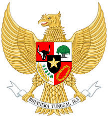

POLITEKNIK NEGERI BANJARMASIN
Jurusan yang ada di Politeknik Negeri Banjarmasin adalah sebagai berikut:
- JURUSAN TEKNIK SIPIL
- D3 TEKNIK SISPIL
- D3 TEKNIK PERTAMBANGAN
- D4 TEKNOLOGI REKAYASA KONSTRUKSI JALAN DAN JEMBATAN
- D4 TEKNIK BANGUNAN RAWA
- D4 TEKNOLOGI REKAYASA GEOMATIKA DAN SURVEI
- JURUSAN TEKNIK ELEKTRO
- D3 TEKNI LISTRIK
- D3 ELECTRONIKA
- D3 TEKNIK INFORMATIKA
- D4 SISTEM INFORMASI KOTA CERDAS
- D4 TEKNOLOGI REKAYASA PEMBANGKIT ENERGI
- JURUSAN TEKNIK MESIN
- D3 TEKNIK MESIN
- D3 TEKNIK ALAT BERAT
- D4 TEKNOLOGI REKAYASA OTOMOTIF
- JURUSAN AKUNTANIS
- D3 AKUNTANSI
- D3 SISTEM INFORMASI AKUNTANSI
- D4 AKUNTANSI LEMBAGA KEUANGAN SYARIAH
- JURUSAN ADMINISTRASI BISNIS
- D3 ADMINISTRASI BISNIS
- D3 SISTEM INFORMASI
- D4 BISNIS DIGITAL
Muhammad Rusdianor
NIM D040325011
